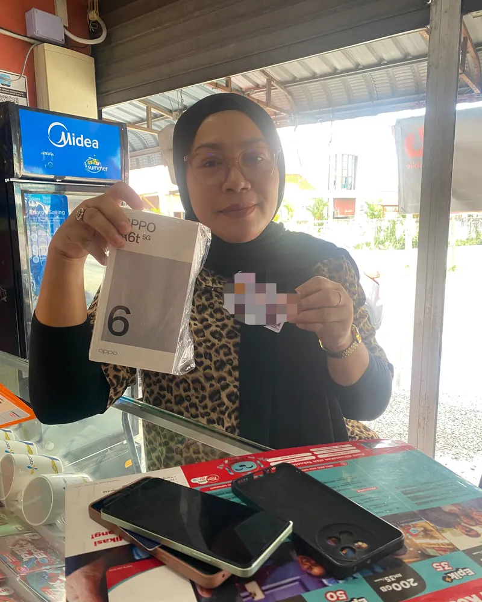

Telco Pilihan Kelantan: Perbandingan Pelan Prabayar, Pascabayar & Internet Rumah (Nov 2026)

Di Kelantan, pilihan telco semakin banyak — dari telco besar hingga MVNO yang lebih murah. Untuk memudahkan, kami di Asia Berkat himpunkan pelan yang paling kerap dipilih pelanggan kami di Kota Bharu, Machang dan Gua Musang, dalam satu tempat. Semua harga di bawah seperti diiklankan telco pada November 2026.
Prabayar: CelcomDigi 5G
Sesuai untuk yang mahu kawal belanja, tiada kontrak dan tiada semakan kelayakan. Semua pelan sah 30 hari dengan panggilan tanpa had.
| Pelan | Data | Harga |
|---|---|---|
| 5G Hyper 30 | 50GB + hotspot | RM30 |
| 5G Hyper 35 | 150GB + hotspot | RM35 |
| 5G Power 35 | Tanpa had (FUP 150GB), 18Mbps | RM35 |
| 5G Power 45 | Tanpa had (FUP 250GB), 48Mbps | RM45 |
| 5G Power+ 55 | Tanpa had (FUP 400GB), perantauan SG/ID/TH, Viu | RM55 |
| 5G Power+ 65 | Tanpa had (FUP 400GB), perantauan SG/ID/TH, Prime Video | RM65 |
Pascabayar: U Mobile ULTRA5G (dengan telefon RM0)
Pilihan popular untuk yang mahu "claim phone melalui plan" — telefon 5G RM0 bila langgan pelan tertentu (tertakluk kelayakan).
| Pelan | Kelebihan | Harga |
|---|---|---|
| ULTRA Postpaid 45 | 500GB data & hotspot | RM45/bln |
| ULTRA Postpaid 68 | 1,000GB, roaming SG/ID/TH 15GB; telefon RM0 cth. Galaxy A07, Vivo Y11, realme C100 | RM68/bln |
| ULTRA Global 98 | 1,000GB, roaming 60+ destinasi; telefon RM0 cth. OPPO A6, HONOR 600S, Redmi Note 17 Pro | RM98/bln |
| ULTRA Family 128 | 4 talian, 1,000GB dikongsi; telefon RM0 cth. Galaxy A57, Xiaomi 17T, atau 2 telefon RM0 | RM128/bln |
Pakej telefon + pelan lain
- Celcom & Digi (kontrak 2 tahun) — kedua-duanya kini bergabung sebagai CelcomDigi, tetapi pelan dan harga masih berbeza. Plan 100 (1,000GB + panggilan tanpa had) dan Plan 80 (600GB + Viu 12 bulan). Contoh: HONOR 600S muka RM100, Celcom RM80 / Digi RM90 sebulan; nubia V80 Max (4G) muka RM160, Celcom RM59 / Digi RM67 sebulan (bulanan untuk 10 bulan pertama). Lihat semua 11 pilihan telefon. Ada isu kelayakan? Kami bantu semak pilihan.
- Unifi Mobile + Nubia A77 — RM59 sebulan + SST. Kelayakan hijau: RM0 pendahuluan. Kelayakan merah: pendahuluan RM180, bulanan RM51.50 + SST selama 24 bulan.
Internet rumah tanpa kabel
Ramai rumah di Kelantan belum ada talian fiber. U Mobile ULTRA Home 5G jadi pilihan kerana tak perlu pasang kabel — cuma router 5G:
- ULTRA Home 5G — RM68 sebulan (asal RM78), 1,000GB FUP, router WiFi 6 percuma.
- ULTRA Home 5G Pro — RM98 sebulan, 2,000GB FUP, router WiFi 7 dan AI Game Turbo.
Pastikan rumah anda dalam kawasan liputan dahulu — lihat butiran internet rumah.
Telco pilihan ikut situasi
- Pelajar / bajet ketat → prabayar RM30–RM35.
- Peniaga online, banyak hotspot → Power 45 prabayar atau ULTRA Postpaid 68.
- Kerap ke Thailand → Power+ 55/65 atau ULTRA Postpaid 68 (roaming TH disertakan).
- Nak telefon baharu tanpa bayar penuh → pakej Celcom, Unifi Mobile, atau telefon RM0 U Mobile.
- Satu keluarga → ULTRA Family 128 (4 talian).
- Mahu lebih murah lagi → tanya pilihan MVNO seperti Tune Talk, XOX dan redONE yang menumpang rangkaian telco besar.
Nak tukar telco tapi kekal nombor?
Gunakan pindah nombor (port-in) — nombor anda kekal. Bawa MyKad ke kedai kami, kami bantu uruskan. Untuk U Mobile, port-in ke ULTRA Family atau ULTRA Postpaid layak rebat RM120 dan diskaun RM10 selama 12 bulan.
Soalan lazim
Apakah telco pilihan di Kelantan?
Bergantung pada kegunaan. Prabayar CelcomDigi sesuai untuk bajet dan kawalan belanja, U Mobile ULTRA5G pascabayar popular untuk claim telefon RM0, dan U Mobile ULTRA Home 5G dipilih untuk internet rumah tanpa kabel. Asia Berkat menguruskan 9 rangkaian supaya anda boleh bandingkan di satu tempat.
Pelan prabayar paling murah dengan data banyak?
Antara pilihan Nov 2026: CelcomDigi 5G Hyper 35 (150GB, RM35) dan 5G Power 35 (tanpa had dengan FUP 150GB, RM35). Semua pelan sah 30 hari dengan panggilan tanpa had.
Boleh dapat telefon percuma dengan pelan?
Boleh. Contohnya U Mobile ULTRA Postpaid 68 (RM68 sebulan) dengan telefon 5G RM0 seperti Samsung Galaxy A07, tertakluk kepada kelayakan dan stok.
Ada internet rumah tanpa pasang kabel di Kelantan?
Ada. U Mobile ULTRA Home 5G dari RM68 sebulan menggunakan router 5G tanpa pemasangan kabel. Liputan perlu disemak dahulu ikut alamat rumah.
Harga dan pelan seperti diiklankan oleh syarikat telco pada November 2026, tertakluk kepada perubahan, liputan dan semakan kelayakan. Sila sahkan dengan staf kami sebelum mendaftar.